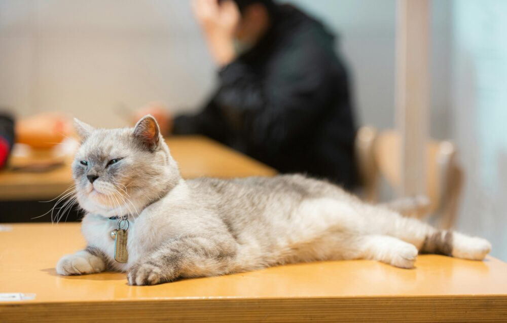
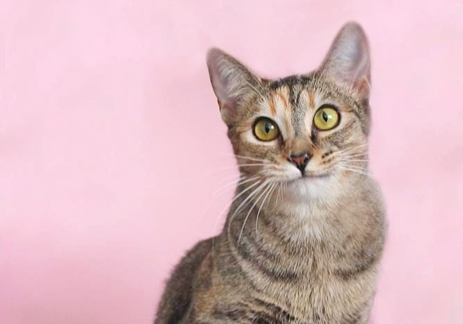
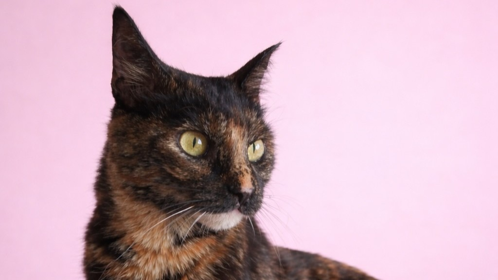
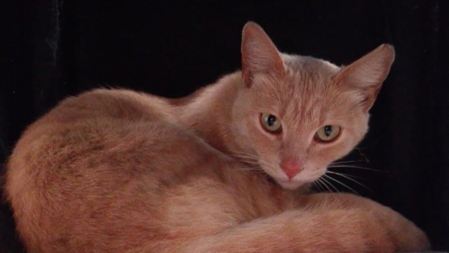
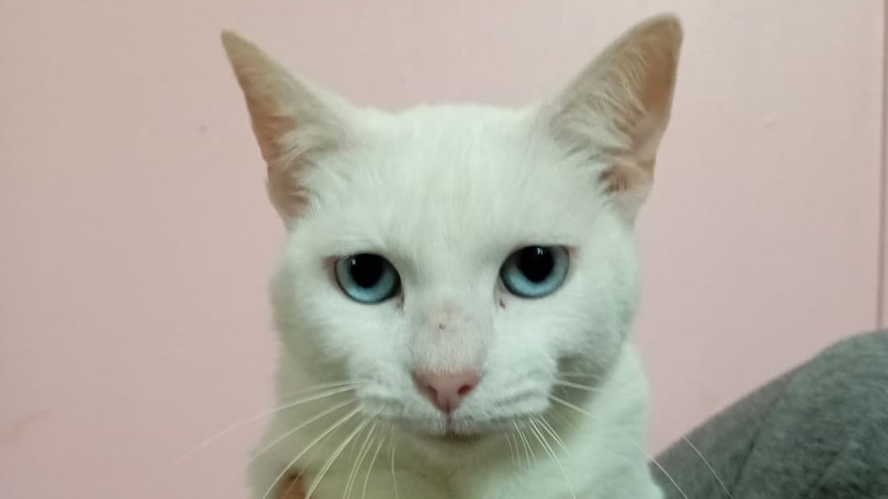
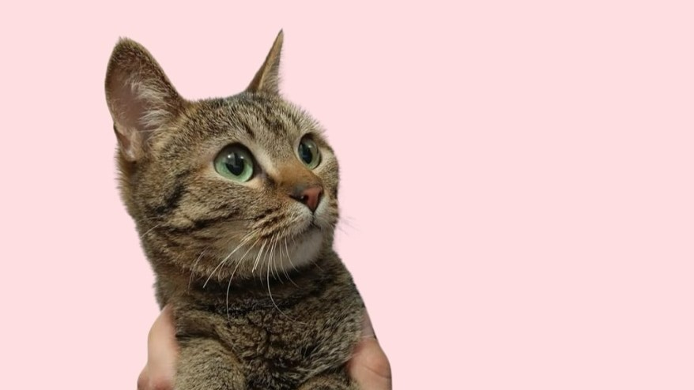

Te damos la bienvenida a Jerry Catfeld
Si lo que buscas es un lugar para relajarte, disfrutar de un buen café y compartir momentos con adorables gatos, ¡has llegado al lugar correcto! En Jerry Catfeld, creemos que la compañía de los gatos puede alegrar el día de cualquiera. Nuestro café es el refugio perfecto para los amantes de los felinos, donde puedes disfrutar de una taza de café mientras acaricias a nuestros amiguitos peludos.
¡Adentrate en nuestro menú, con todo el antojo del mundo! Pasa tu mouse por encima de los platillos para descubrir su nombre y descripción. También conoce a las criaturas felinas que hacen de este lugar un sitio tan especial. ¡Te esperamos con los brazos abiertos y las patas listas para recibirte!

Nuestros Adorables y Peludos Residentes

Porthas
Edad: 1 año (aprox.)
Mi Historia: Me rescataron cuando tenía como 1 mes y medio junto con mis 3 hermanas, 2 encontraron hogar pero Ara (última foto) y yo, seguimos en busca de nuestra oportunidad, incluso un día fui a la TV (4to video) pero nadie ha preguntado por mi… yo tengo fe que algún día tendré mi propia familia, sería increíble que me adoptaran junto con Ara pero sino es posible estamos conscientes que cada una deberá tomar su camino. (e. g. huellitasconmagia)

Frida
Edad: 1 año (aprox.)
Mi Historia: Frida fue rescatada de situación de calle ... donde tuvo que aprender a sobrevivir con mucho miedo, pues en esa zona fueron matando a su familia gatuna ... Afortunadamente ya se encuentra resguardada en un espacio seguro. Frida tiene un año de edad, está desparasitada y esterilizada. Es una gatita muy dicen y cariñosa y además tiene un patrón de colores muy único. (e. g. huellitasconmagia)

Guero
Edad: Más de 1 año (aprox.)
Mi Historia: Me rescataron, me perdí, las humanas de @huellitasconmagia pidieron ayuda de @petloc.mx y 3 meses después pude regresar a mi #hogartemporal 🐈 hoy estoy listo para irme en adopción, me hicieron mis pruebas, me vacunaron y antes de pedrderme ya estaba esterilizado. En verdad tengo muchas ganas de una familia, de preferencia ser gathijo único porque por todo lo que he pasado a veces me cuesta trabajo convivir con más gatitos, soy amoroso y muy inteligente! (e. g. huellitasconmagia)

Nancy
Edad: Más de 1 año (aprox.)
Mi Historia: Soy una gatita muy tranquila y cariñosa, estoy buscando una familia que me ame de verdad y me apapache mucho! (e. g. huellitasconmagia)

Lucy
Edad: 2 años (aprox.)
Mi Historia: Hola soy Lucy, una gatita muy tierna, cariñosa, sociable con gatitos y humanos. Tengo 7 meses aprox. Ya estoy esterilizada y vacunada, mi pelito sigue poniendose bello porque la verdad del lugar del que me rescataron estaba muy feo, me tenían amarrada todo el tiempo, mi agua muuuuuy sucia y casi no me daban de comer ... Afortunadamente, he sido adoptada por una linda familia, pero siempre hay más de mis familiares y amigos en busca de un hogar! (e. g. huellitasconmagia)
Una enorme mención para 'huellitasconmagia'
Todos los gatos del café, provienen de la maravillosa labor de rescate, cuidado y rehabilitación de la organización de "huellitasconmagia" en Instagram:
@huellitasconmagiaEllos se encargan de darles a estas preciosas criaturas, la oportunidad de algún día encontrar un lindo y acogedor hogar, con una vida digna junto a su nueva y amorosa familia. MUCHAS GRACIAS huellitasconmagia por todo lo que hacen por los gatos, por compartir sus historias y por ser un ejemplo de amor y dedicación hacia los animales. ¡Son verdaderamente mágicos!